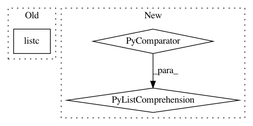

3b3c16d039a7429f41001e2260c854c4e222bd73,tests/wrappers_tests/test_vector_frame_stack.py,TestVectorFrameStack,test,#TestVectorFrameStack#,46
Before Change
After Change
// Wrap by FrameStack and MultiprocessVectorEnv
fs_env = chainerrl.envs.MultiprocessVectorEnv(
[functools.partial(
FrameStack, make_env(idx), k=self.k, channel_order="chw")
for idx, env in enumerate(range(self.num_envs))])
// Wrap by MultiprocessVectorEnv and VectorFrameStack
vfs_env = VectorFrameStack(
In pattern: SUPERPATTERN
Frequency: 3
Non-data size: 3
Instances
Project Name: chainer/chainerrl
Commit Name: 3b3c16d039a7429f41001e2260c854c4e222bd73
Time: 2019-05-08
Author: muupan@gmail.com
File Name: tests/wrappers_tests/test_vector_frame_stack.py
Class Name: TestVectorFrameStack
Method Name: test
Project Name: modAL-python/modAL
Commit Name: 9bf5f79f13ebd9f86111e75b872d692b92eec5b9
Time: 2018-09-18
Author: theodore.danka@gmail.com
File Name: tests/core_tests.py
Class Name: TestUtils
Method Name: test_linear_combination
Project Name: OpenNMT/OpenNMT-tf
Commit Name: e967f1c82f1577fded52732e68f9128c98927692
Time: 2019-02-20
Author: guillaume.klein@systrangroup.com
File Name: opennmt/tests/encoder_test.py
Class Name: EncoderTest
Method Name: _encodeAndProjectInParallel